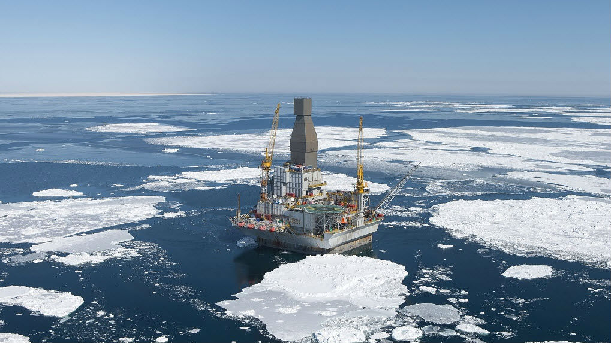
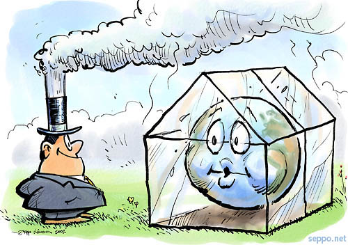
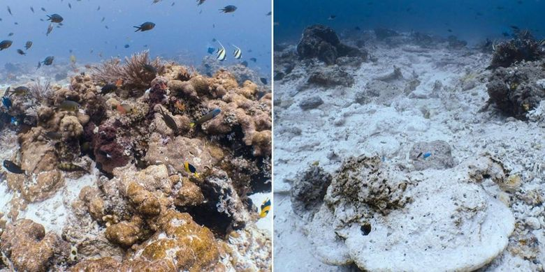
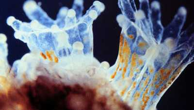
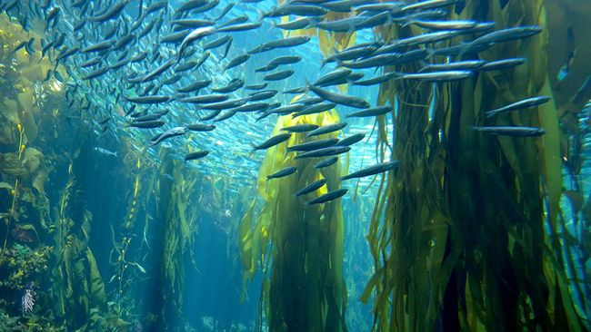
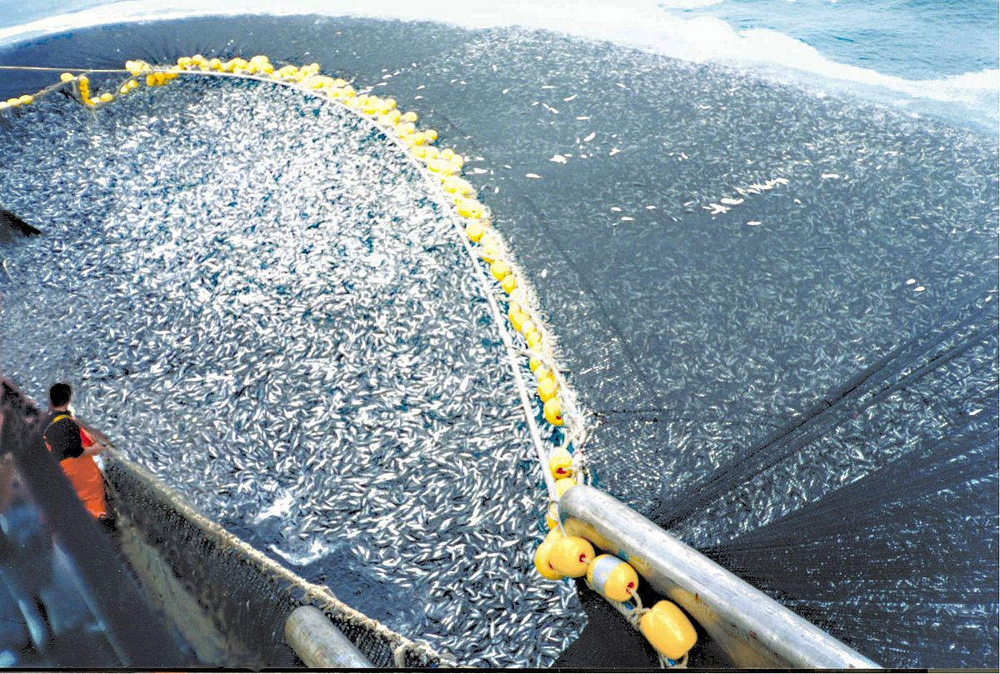
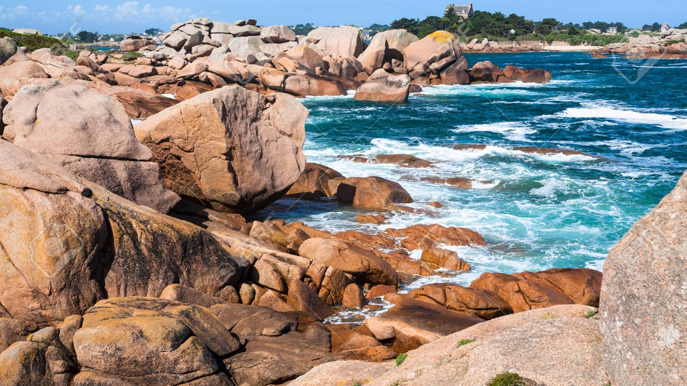

Antartika

Sebuah studi mengungkapkan dampak negatif dari menyebarnya daratan bebas es di Antartika dapat mengancam keberadaan spesies tumbuhan dan hewan unik dari benua tersebut.Peneliti program Antartika Australia, Aleks Traud dalam laporan USA Today menyatakan bahwa hal itu dapat menyebabkan penyebaran spesies invasif dan dalam jangka panjang bisa menyebabkan kepunahan spesies asli di Antartika. Spesies invasif adalah jenis hewan atau tumbuhan yang bukan asli daerah tertentu dan dapat menyebabkan kerugian baik itu dari segi ekonomi maupun lingkungan. Selain itu, perburuan predator tingkat atas seperti paus dan anjing laut di Antartika juga dapat menyebabkan ketidakseimbangan ekosistem.
Arktik
Pemanasan laut bisa mengacaukan rantai makanan yang selanjutnya berdampak pada ekosistem lau tersebut. Pemanasan laut mengakibatkan menurunnya jumlah phytoplankton secara drastis. Phytoplankton memainkan peranan besar dalam rantai makanan ekosistem laut karena tanaman kecil ini merupakan santapan bagi zooplankton yang juga santapan bagi hewan lainnya yang berukuran besar. Sehingga, berkurangnya phytoplankton dapat mengganggu rantai makanan dan berakibat pada ekosistem laut yang bermasalah. Dampak serius lain dari pemanasan air laut adalah pemutihan karang (coral bleaching) yang merupakan habitat dari ribuan spesies kecil hewan laut, dan penelitian para ahli menyatakan sepertiga dari kehidupan hewan laut tergantung dari habitat laut ini. Para ilmuwan mengungkapkan hingga 90% pemanasan global disebabkan emisi karbon manusia. Mereka memperkirakan emisi karbon inilah yang diserap lautan dunia.Penyebab utama pemanasan global adalah pembakaran bahan bakar fosil, seperti minyak bumi dan gas alam yang melepas karbondioksida dan gas gas lainnya seperti metana, chlor, belerang dan lain sebagainya yang menyebabkan efek rumah kaca. Oleh karena itu, pengembangan/pengeboran minyak bumi dan gas juga memberikan pengaruh pada pemanasan global.  Pemanasan global membuat es mencair, sehingga semakin banyak kapal yang berlayar untuk melakukan pencairan minyak bumi dan gas. Badan Survei Geologi Amerika memperkirakan di dalam perairan Arktik di wilayah Amerika sendiri terdapat 26 miliar barel minyak. Aktivitas pertambangan di Antartika bertentangan dengan Traktat Antartika yang diandatangani oleh 12 negara anggota pada 1 Desember 1959 dan mulai berlau pada 1961. Traktat tersebut mengatur wilayah Antarika sebatas keperluan penelitian ilmiah dan pelestarian alam, serta melarang segala kegiatan militer. Tetapi, menipisnya cadangan minyak di dunia dan permintaan minyak bumi diklaim masih tinggi pihak pihak pro eksploitasi sumber daya alam menyerukan agar larangan penambangan di Antartika ditinjau kembali sehingga saat ini, Kutub Selatan bukan hanya dipandang sebagai rumah bagi habitat para pinguin dan biota laut lainnya, melainkan sebagai lumbung minyak dan tambang alam lainnya yang siap digarap.
Terumbu Karang
Pariwisata di kawasan terumbu karang tentu memberikan dampak positif pada bidang ekonomi. Umumnya, dengan adanya kawasan wisata selalu dibarengi dengan pembangunan di daerah tersebut. Menurut Tomascik (1991), pembangunan konstruksi adalah salah satu kegiatan manusia yang berkaitan erat dengan sedimentasi. Keberadaan sedimen di area terumbu karang mempunyai pengaruh negatif bagi terumbu karang karena dapat menyebabkan penurunan kejernihan air yang berdampak pada menurunnya tingkat kemampuan penetrasi cahaya. Padahal cahaya merupakan faktor yang penting untuk pertumbuhan dan perkembangan suatu karang karena cahaya merupakan salah satu faktor yang dibutuhkan Zooxantellae dalam proses fotosintesis. Oleh karena itu, secara tidak langsung keberadaan sedimen mempengaruhi terumbu karang karena sedimen mempengaruhi perkembangan Zooxantellae yang merupakan hampir 30% sampai 90% sumber energi terumbu karang.
Hutan Kelp
Kelp merupakan jenis sayuran laut dan sumber mineral, termasuk yodium, kalsium, magnesium, dan besi. Tidak seperti alga kecil yang tumbuhnya tidak lebih dari beberapa sentimeter, kelp justru tumbuh dari dasar dan merentangkan daunnya di permukaan air untuk mendapatkan cahaya yang maksimum. Daun kelp membentuk tudung yang mirip dengan hutan terestrial dan menghalangi cahaya masuk ke substrat yang ada di bawahnya. Pemanasan laut merupakan salah satu ancaman bagi hutan kelp karena dapat mengacaukan rantai makanan yang selanjutnya menyebabkan ketidakseimbangan trofik. Salah satu wujud ketidakseimbangan trofik adalah menurunnya populasi karnivora dan meningkatnya populasi herbivora di hutan kelp.
Mangrove

Hasil kajian banyak peneliti menunjukan bahwa tanpa perbaikan kebijakan dan praktik pembangunan di wilayah pesisir, laju kehilangan hutan mangrove di Asia Tenggara dalam beberapa dekade terjadi akibat konversi menjadi lahan pertanian dan perkebunan kelapa sawit. Padahal dalam banyak kasus, hutan bakau melindungi kawasan pesisir dari terjangan badai, angin topan atau tsunami sekalipun.Karena ekosistem ini mampu menyesap air dalam jumlah besar dan dengan begitu mencegah banjir. "Akar dan dahan bakau menahan gelombang air," kata Femke Tonneijck dari organisasi lingkungan Wetlands International.
Laut Terbuka
Penangkapan berlebih (over-exploitation), didefinisikan sebagai pengambilan sumber daya hayati laut (ikan) pada laju yang melebihi kemampuan sumber daya untuk melakukan pemulihan secara alami. Indikasi awal penangkapan berlebih ialah berkurangnya stok populasi, dan akhirnya, hasil tangkapan nelayan.  Indikasi lainnya ialah pada semakin kecilnya ukuran ikan yang tertangkap oleh nelayan. Penangkapan berlebih, jelas akan merugikan nelayan dan masyarakat karena potensi sumber daya yang bisa dimanfaatkan akan semakin menurun. Hal ini akan berdampak pada kerugian ekonomi masyarakat lokal, bahkan bisa terjadi dalam bentuk hilangnya salah satu sumber penghidupan masyarakat pesisir dari penangkapan ikan. Ketika sumber daya mulai berkurang, kita bisa melihat frekuensi konflik diantara nelayan pengguna sumber daya yang semakin intens. Konflik nelayan di Selat Madura (Jawa Timur) atau di Selat Malaka (Sumatera) ialah dua contoh yang masih kita bisa lihat sampai saat ini. Sumber daya hayati laut tinggal pada habitat atau ekosistem dan membentuk simbion, satu sama lain saling terkait, membentuk kesimbangan ekosistem.44 Ancaman pada sumber daya hayati laut Penangkapan berlebih bisa terjadi dalam beberapa bentuk – growth over fishing, recruitment over-fishing dan ecological over-fishing. Growth over-fishing terlihat dari gejala ukuran ikan hasil tangkap yang semakin kecil. Ecological over-fishing menyebabkan perubahan susunan rakitan spesies yang selanjutnya berdampak pada tidak seimbangnya struktur ekosistem. Recruitment overfishing dicirikan dari menghilangnya individu baru secara mendadak sebagai dampak dari pengurasan induk potensial. Ketiga jenis penangkapan berlebih ini tentu saja merupakan ancaman bagi sumber daya dan keragaman hayati laut
Pantai Berbatu (Rockhy Shore)
Pantai berbatu (rocky shore) menjadi habitat dari berbagai jenis hewan dan tumbuhan. Selain menjadi rumah bagi banyak hewan, pantai berbatu juga menyediakan banyak makanan bagi ikan. Ikan yang dapat ditemukan di sekitar pantai berbatu yaitu blackfish, yellowfinbream, kakap, trevally, yellowtail, dan sampson fish. Hamparan alga di habitat ini menjadi sumber makanan bagi hewan langka seperti penyu. Pada saat air laut surut, burung-burung akan mencari kepiting yang ada di antara bebatuan. Tempat ini tepat untuk mengamati berbagai macam tumbuhan dan hewan, namun juga memberi akses manusia untuk mengumpulkan dan menginjak organisme yang hidup di sana.
Bahkan, tahun ini KKP mulai memfokuskan programnya untuk membenahi Pantura Jawa. "Kami prihatin dengan kondisi Pantura Jawa ini. Kerusakannya cukup tinggi," kata Dirjen Perikanan Tangkap...Lanjut Baca
Bongkahan es raksasa seluas 6.000 kilometer persegi atau setara luasnya Pulau Bali, runtuh, terlepas dari daratan utama Antartika (Kutub Selatan). Ini merupakan iceberg paling besar yang tercatat dalam sejarah, beratnya diperkirakan...Lanjut Baca
“Kedua tim telah sepakat bahwa luas terumbu karang yang rusak sebesar 18.882 m2, dan kesepakatan tersebut telah ditandatangani kedua belah pihak di atas kertas bermaterai,” jelas Deputi...Lanjut Baca
Direktorat Jenderal Penegakan Hukum LHK (Ditjen Gakkum), Rasio Ridho Sani menyatakan, dua kapal asing berbendera Bahama dan Belgia, MV Lyric Poet dan MT Alex, telah membayar ganti rugi senilai total lebih dari 2,5 juta dolar AS atau senilai R. 35,4 miliar kepada negara melalui Kementerian Lingkungan...Lanjut Baca
"mangrove yang kita punya terbesar di dunia, tapi kerusakannya juga paling besar. Sebagai Negara kepulauan, pemerintah belum mengintegrasikan visi keselamatan masyarakat yang hidup di pesisir dalam konteks perubahan iklim"...Lanjut Baca
Letusan dahsyat Gunung Krakatau pada 1883 telah melenyapkan segala kehidupan di atasnya. Kini, sebagian pulau di bekas Gunung Krakatau telah ditumbuhi tumbuhan. Kondisi itu menjadikan Kepulauan Krakatau sebagai satu-satunya laboratorium alam pembentukan hutan tropik tanpa campur tangan manusia....Lanjut Baca